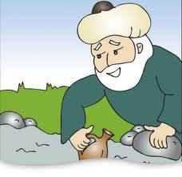

|

|
Aslında ilmî bir kalıba sokulamayan ilk Türk sosyoloğu ve filozofu diyebileceğimiz adamın adının Nasreddin Hoca olduğunu söyleyecek olsak, ilim çevreleri dâhil buna gülmeyecek pek az kimse bulunacaktır.
O, yazmamış; söylemiş, günlük hayatı konuşturmuş böylece de insan oğlunun dimağına hikmetler nakşetmiş bir ulu kişidir.
Ne çare ki, bu halk adamına ilim dünyasının kapıları kapalı olduğundan bir mizah fıkracısı kabul ettiğimiz Nasreddin Hoca, hayatın derinliklerindeki gerçeklerle cemiyeti uyandırarak terbiye eden kimselerden biri olduğu hâlde, biz bunun dahi şuuruna varmış değiliz.
Sâmiha Ayverdi
|